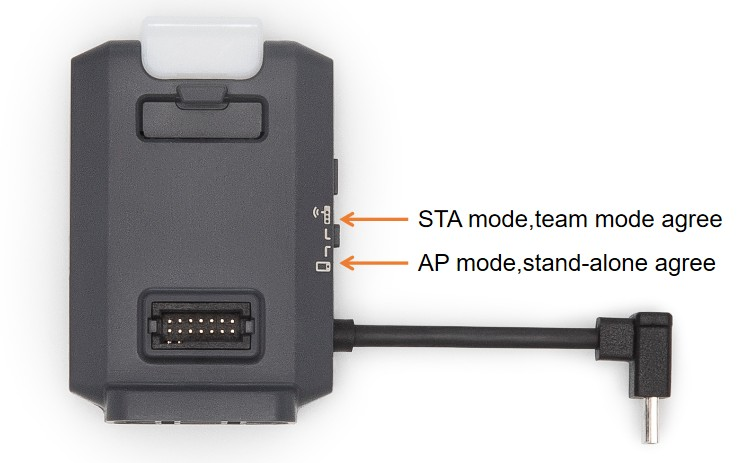
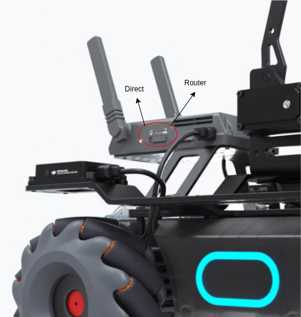

How To
Setup Wi-Fi for RMTT and RMEP
All the drones and robots are tested with 2.4 GHz Wi-Fi network. It is advisible to assign static IPs to the RMTT drones and RMEP robots using the router settings and label the robots and drones with their IPs for ease of use. If dynamic IP are used, enable random_assign option in the robomaster_server.yaml file.
Use the setup_wifi.yaml file to setup the configuration required.
Drones:
Connect the external module to the RMTT drones, switch the connection mode to direct (AP mode) connection and power on all the drones.
Robots:
Turn on the robots and switch the connection mode to router connection.
Once all the drones and robots are powered on, run the following command.
ros2 launch robomaster_ros2 setup_wifi.launch.py
This will connect your PC to the RMTT drones one by one and excecute the necessary commands to set up the Wi-Fi connection.
The QR code will be displayed on seperate window. press the red/white small button on the side of the robot’s connection switch and scan it using the robot’s camera to connect the robot to the Wi-Fi network.
Once the setup is done, drones need turn off and switch to the router (STA mode) connection mode. Now when the drones are powered on, they will connect to the Wi-Fi network and propeller will start spinning at low speed. This indicates the connection is successful. (It can take couple of minutes)
Note
This setup procedure is generally only required once. If a drone or robot is unable to connect to the network, repeat the setup process for the specific robot/drone.
Start the robomaster server
Once all the drones, robots and PC are connected to the Wi-Fi network, robomaster server can be started.
Check the rmtt_param.yaml and rmep_param.yaml files to ensure the parameters are set correctly for the drones and robots.
Check the robomaster_server.yaml file to ensure the local IP, number of drones and robots are set correctly.
ros2 launch robomaster_ros2 robomaster_server.launch.py